备注
Java9模块系统开发需要抽空了解一下
JVM概述
- JVM：Java Virtual Machine（java虚拟机）
- 虚拟机：通过软件模拟的具有完整硬件系统功能的、运行在一个完全隔离环境中的计算机系统
- jvm是通过软件来模拟java的字节码指令集，是java程序的运行环境
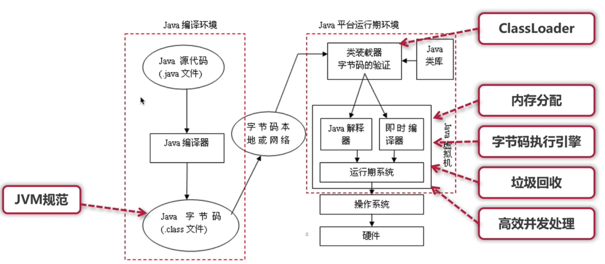
jvm主要功能
- 通过ClassLoader寻找和装载class文件
- 解释字节码成为指令并执行，提供class文件的运行环境
- 进行运行期间的内存分配和垃圾回收
- 提供与硬件交互的平台
- 虚拟机是java平台无关的保障
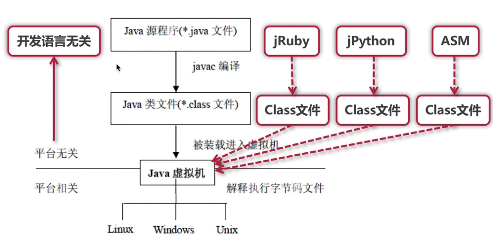
jvm规范作用
- java虚拟机规范为不同的硬件平台提供了一种编译java技术代码的规范
- 该规范使用java软件独立于平台，因为编译是针对作为虚拟机的
一般机器而做 - 这个
一般机器可用软件模拟并运行于各种现存的计算机系统，也可用硬件来实现
jvm规范定义的主要内容
- 字节码指令集（相当于中央处理器cpu）
- class文件的格式
- 数据类型和值
- 运行时数据区
- 栈帧
- 特殊方法
- 类库
- 异常
- 虚拟机的启动、加载、链接和初始化
class文件格式概述
class文件是jvm的输入，java虚拟机规范中定义了，class文件的结构，class问价是jvm实现平台无关、技术无关的基础
1:class文件是一组以8字节为单位的字节流，各个数据项目按顺序紧凑排列
2:对于占用空间大于8字节的的数据项，按照高位在前的方式分割成多个8字节进行存储
3:class文件格式里面只有两种数据类型：无符号数、表
（1）无符号数：基础数据类型，以u1、u2、u4、u8来代表几个字节的无符号数
（2）表：由多个无符号数和其它表构成的复合数据类型，通常以_info结尾
类加载
概述
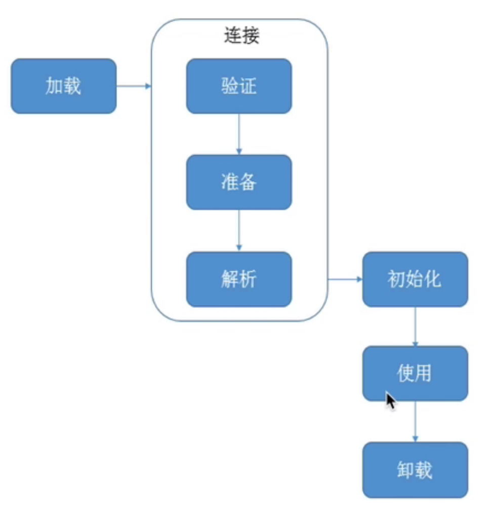
- 加载：查找并加载类文件的二进制数据
- 连接：将已经读入内存的类的二进制数据合并到jvm运行时环境中去，包含如下几个步骤
- 验证 ：确保被加载类的正确性
- 准备：为类的静态变量分配内存，并初始化它们
- 解析：把常量池中的符号引用转换成直接引用
- 初始化：为类的静态变量赋初始值
类加载要完成的功能
- 通过类的全限定名来获取该类的二进制字节流
- 把二进制字节流转化为方法区的运行时数据结构
- 在堆上创建一个java.lang.Class对象，用来封装类在方法区内的数据结构，并向外提供了访问方法区内数据结构的接口
加载类的方式
- 最常见的方式：本地文件系统中加载、从jar等归档文件中加载
- 动态的方式：将java源文件动态编译成class
- 其它方式：网络下载、从专有数据库中加载等等
类加载器
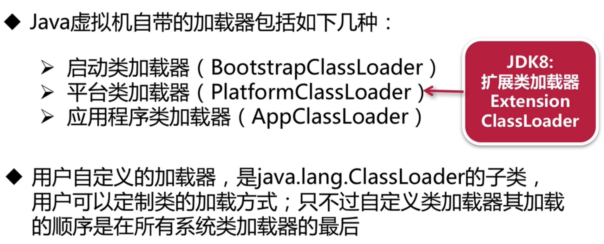
- 为什么要废除jdk1.8的扩展类加载器
- jdk1.8的扩展类加载器主要加载
jre/lib/ext下面的jar包，当我们想扩展功能的时候就把jar包放在下面。其实并不安全- jdk9想要扩展功能的时候，因为jdk9有了模块化开发，这种扩展机制就被模块化的天然扩展能力取代了
- 类加载器的关系
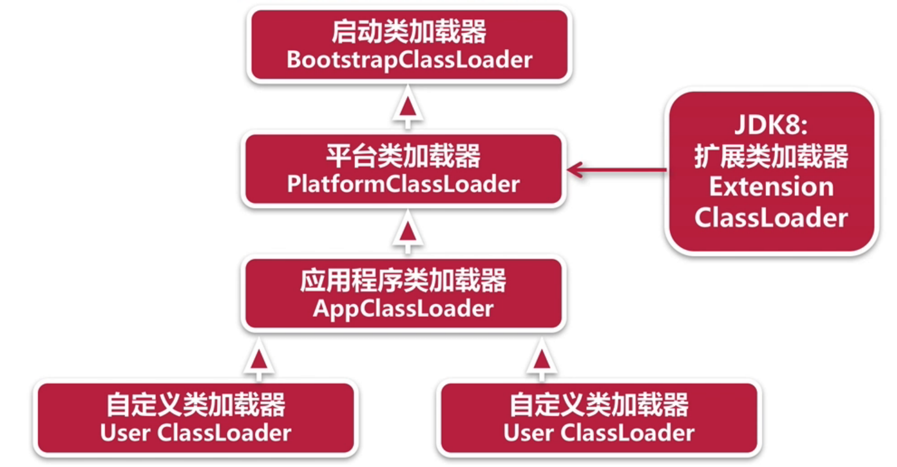
类加载器说明
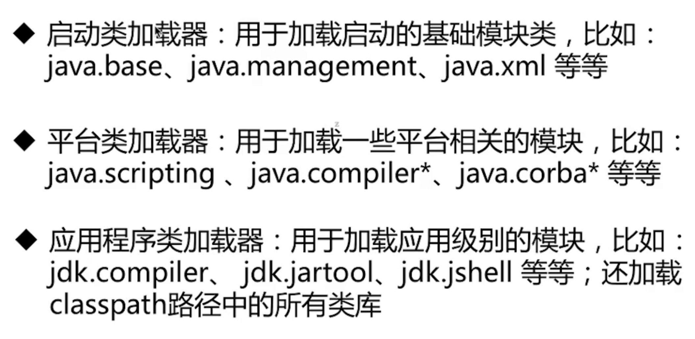
1 | // 各种类加载器 |
1 | // 运行输出结果 |
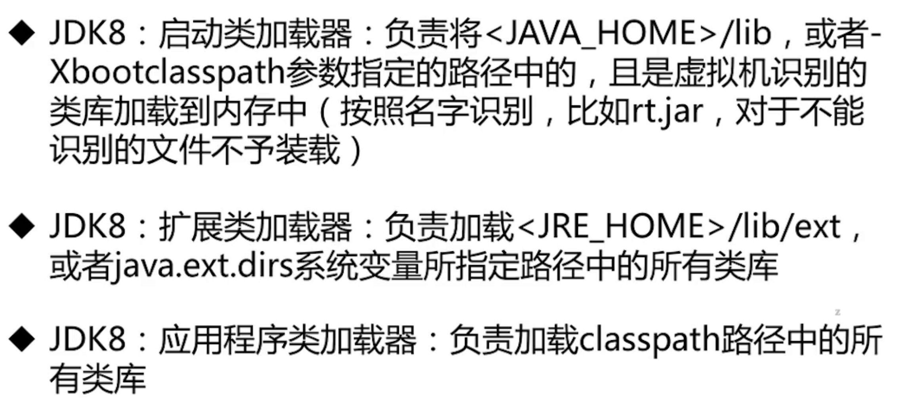
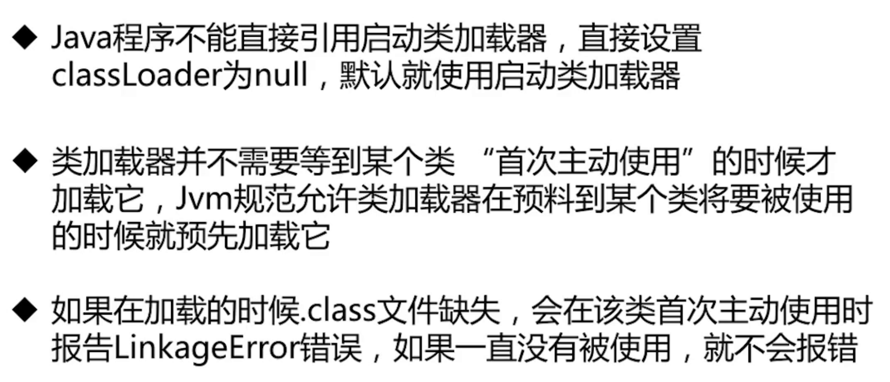
双亲委派模型
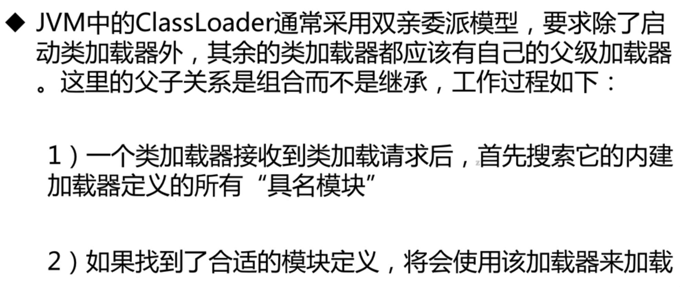
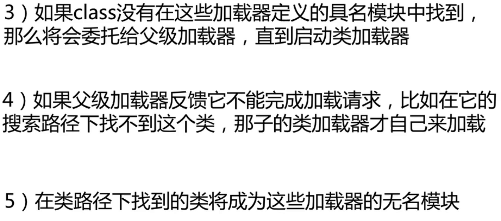
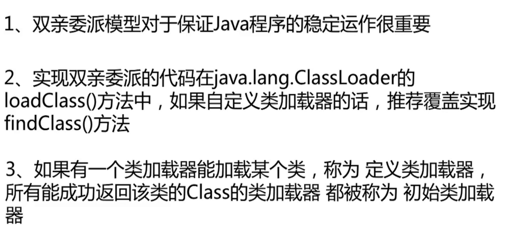
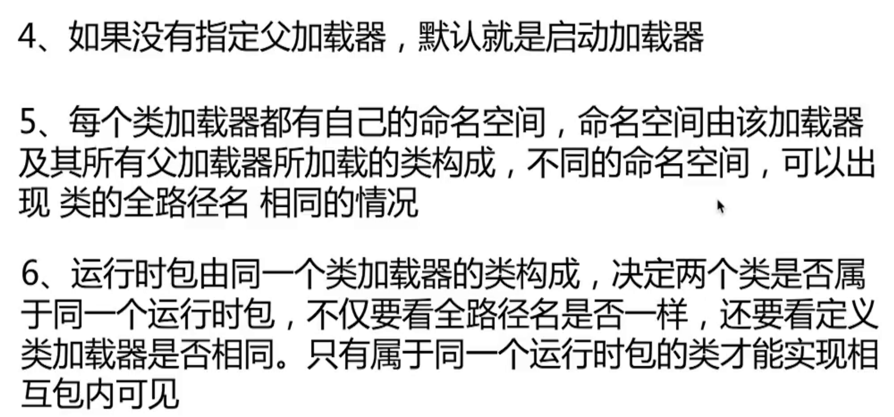
破坏双亲委派模型
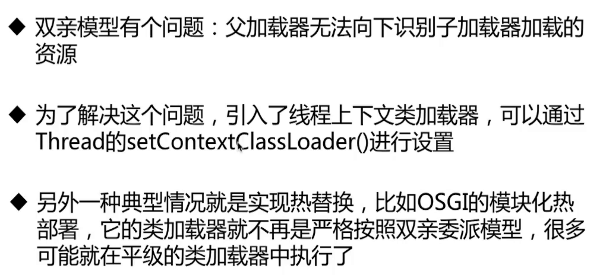